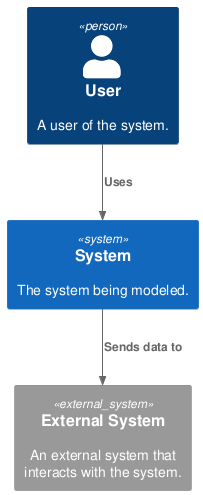

Diagrams
Mermaid embedded
sequenceDiagram
Alice->>John: Hello John, how are you?
John-->>Alice: Great!
Alice-)John: See you later!
PlantUML embedded
PlantUML external
External PlantUML files are not supported
Please note that loading puml from external files is not supported yet.
Kudos to mkdocs_puml plugin: they are planning to enhance it.
